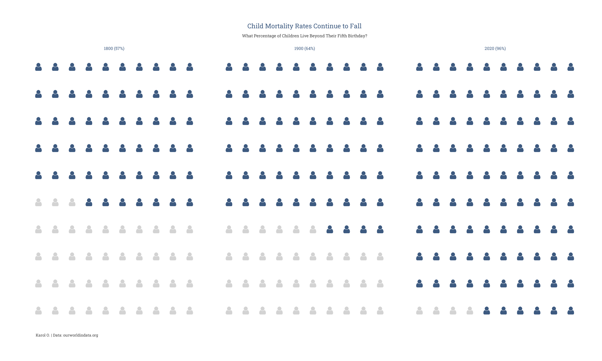

library(emojifont)
library(tidyverse)
library(usefunc)
library(showtext)Introduction
The global rate of child mortality has reached its lowest point in history, marking a remarkable achievement in the realm of public health. Over the past three decades, child mortality has more than halved, dropping from 12.5 million in 1990 to 5.2 million in 2019. This significant progress deserves recognition and highlights the collective efforts made by nations worldwide. In this article, we delve into the topic of child mortality, explore the current statistics, and discuss the importance of ensuring the survival of our future generations.

Understanding the Sustainable Development Goals (SDGs)
As part of the Sustainable Development Goals (SDGs), all countries have committed to achieving a child mortality rate of at least 2.5% by 2030. This means that irrespective of their birthplace, more than 97.5% of children should survive beyond their fifth birthday. However, the reality is that 3.9% of children globally still face the tragic fate of dying before reaching this milestone. This equates to an average of 15,000 child deaths every day, highlighting the urgent need for further action.
Analyzing the Data
To gain insights into child mortality rates, we analyzed data from various years, including 1800, 1900, and 2020. The dataset reveals the percentage of children who do not survive beyond their fifth birthday. By visualizing the data, we can better comprehend the progress made and identify areas that require additional attention.
Data Wrangling
To conduct our analysis, we employed various data wrangling techniques using R programming language. We utilized libraries such as tidyverse, showtext, and emojifont to preprocess and visualize the data effectively.
Plotting the Data
Through the use of ggplot2, a popular data visualization package in R, we created a visually appealing plot that showcases the child mortality rates over time. The plot employs a grid layout, with each grid representing a specific year. Within each grid, we display icons of individuals, where each icon represents a child. The icons are color-coded to differentiate between children who survive and those who perish before the age of five. The plot provides a striking visual representation of the progress made and the work that lies ahead.
Conclusion
The decline in child mortality rates is a testament to the collective efforts of governments, organizations, and individuals working towards the well-being of children worldwide. However, the battle is far from over. We must continue our relentless pursuit of ensuring that every child has the opportunity to thrive and contribute to our society. By investing in healthcare, education, and social support systems, we can strive to achieve the Sustainable Development Goals and secure a brighter future for all children.
As we move forward, let us remember that behind each statistic lies a precious life, a potential future leader, and a source of boundless possibilities. Together, we can make a difference and create a world where every child lives beyond their fifth birthday, paving the way for a healthier, happier, and more prosperous future.
Load the required packages and dataset
Code
# Load fonts
font_add_google("Roboto Slab", "slab")
font_add_google("Roboto", "roboto")
showtext_auto()
# Read data
df <- tibble(year = c(1800, 1900, 2020),
percent_die = c(43.3, 36.2, 3.9))
# Prepare data
df_data <- df %>%
mutate(per_hundred = round(percent_die),
survive = (100 - per_hundred),
facet_label = paste0(year, " (", survive, "%)")) %>%
pivot_longer(cols = 3:4, values_to = "perc", names_to = "type") %>%
select(-percent_die)
plot_data_grid <- rep_df(expand.grid(x = rep(1:10), y = rep(1:10)), length(unique(df_data$facet_label))) %>%
mutate(year = rep(unique(df_data$facet_label), each = 100),
label = fontawesome('fa-user'),
type = rep(df_data$type, times = df_data$perc))
# Create plot
p <- ggplot() +
geom_text(data = plot_data_grid,
mapping = aes(x = x,
y = y,
label = label,
colour = type),
family = 'fontawesome-webfont', size = 12) +
facet_wrap(~year) +
scale_colour_manual(values = c("lightgray","#3D5A80"),
labels = c("Survive", "Perish"),
name = "Outcome") +
labs(title = "Child Mortality Rates Continue to Fall",
subtitle = str_wrap_break("What Percentage of Children Live Beyond Their Fifth Birthday?\n\n", 70),
caption = "Karol O. | Data: ourworldindata.org",
x = "",
y = "") +
theme_minimal() +
theme(panel.spacing = unit(2, "lines"),
plot.background = element_rect(fill = "white", colour = "white"),
panel.background = element_rect(fill = "white", colour = "white"),
strip.background = element_rect(fill = "white", colour = "white"),
strip.text = element_text(colour = '#3D5A80', family = "slab", size = 16),
plot.title = element_text(colour = "#3D5A80", size = 24, hjust = 0.5, family = "slab"),
plot.subtitle = element_text(colour = "#404040", size = 16, hjust = 0.5, family = "slab"),
plot.caption = element_text(colour = "#404040", size = 14, hjust = 0.01, family = "slab"),
plot.margin = unit(c(1, 1, 1, 1), "cm"),
legend.position = "none",
panel.grid.major = element_blank(),
panel.grid.minor = element_blank(),
axis.text = element_blank()) +
guides(colour = guide_legend(override.aes = list(size = 6)))
# Adjust figure size and save as PNG
ggsave("child_mortality.png", p, width = 10, height = 6, dpi = 300)